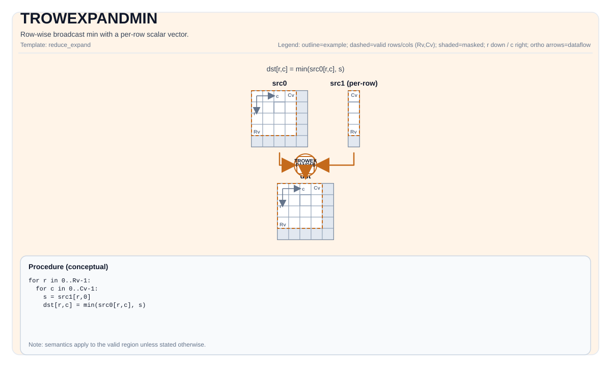
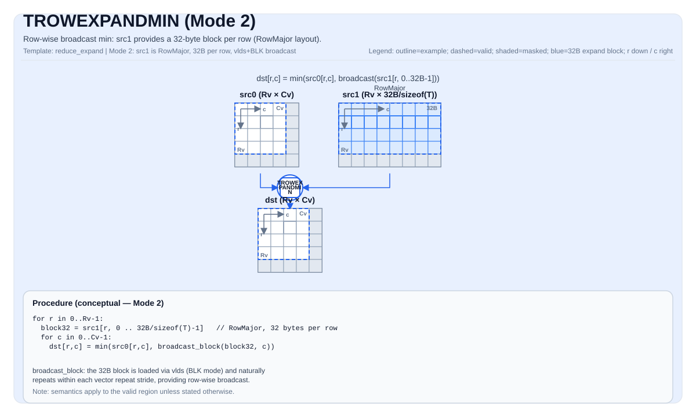

TROWEXPANDMIN¶
Tile Operation Diagram¶
Mode 1 — Scalar per row (ColMajor src1)¶

Mode 2 — 32-byte block per row (RowMajor src1)¶

Introduction¶
Row-wise broadcast min: take min(src0, src1) where the broadcast operand provides per-row values.
The instruction supports two modes determined by the layout of the expanded operand (src1 when src0 matches dst shape, or src0 when src1 matches dst shape):
- Mode 1: The expanded operand is ColMajor with a single column (one scalar per row). Each scalar is broadcast across the entire row.
- Mode 2: The expanded operand is RowMajor with
32 / sizeof(T)columns per row (a 32-byte block per row).
Math Interpretation¶
Let R = dst.GetValidRow() and C = dst.GetValidCol().
Mode 1¶
Let s_i be the per-row scalar taken from the expanded operand (one value per row, ColMajor layout).
For 0 <= i < R and 0 <= j < C:
Mode 2¶
Let b_i be the 32-byte block for row i taken from the expanded operand (RowMajor, 32 / sizeof(T) values per row). The block naturally repeats every elementsPerRepeat elements within a row.
For 0 <= i < R and 0 <= j < C:
Assembly Syntax¶
Synchronous form:
%dst = trowexpandmin %src0, %src1 : !pto.tile<...>, !pto.tile<...> -> !pto.tile<...>AS Level 1 (SSA)¶
%dst = pto.trowexpandmin %src0, %src1 : !pto.tile<...>, !pto.tile<...> -> !pto.tile<...>AS Level 2 (DPS)¶
pto.trowexpandmin ins(%src0, %src1 : !pto.tile_buf<...>, !pto.tile_buf<...>) outs(%dst : !pto.tile_buf<...>)C++ Intrinsic¶
Declared in include/pto/common/pto_instr.hpp:
template <typename TileDataDst, typename TileDataSrc0, typename TileDataSrc1, typename... WaitEvents>
PTO_INST RecordEvent TROWEXPANDMIN(TileDataDst &dst, TileDataSrc0 &src0, TileDataSrc1 &src1, WaitEvents &... events);
template <typename TileDataDst, typename TileDataSrc0, typename TileDataSrc1, typename TileDataTmp,
typename... WaitEvents>
PTO_INST RecordEvent TROWEXPANDMIN(TileDataDst &dst, TileDataSrc0 &src0, TileDataSrc1 &src1, TileDataTmp &tmp, WaitEvents &... events);Constraints¶
TileDataDst::DType == TileDataSrc0::DType == TileDataSrc1::DTypeTileDataDst::DType,TileDataSrc0::DType,TileDataSrc1::DTypemust be one of:half,float,int16,int32for A2, A3 and A5,uint16,uint32,bfloat16_t,int8,uint8for A5.TileDataDstmust be RowMajor (TileDataDst::isRowMajor == true).- Exactly one of
src0orsrc1must have the same valid shape asdst(i.e.,validRow == dst.validRowandvalidCol == dst.validCol). That operand is the full-sized operand. The other operand is the expanded operand (row-broadcast source). - The full-sized operand must be RowMajor (
isRowMajor == true).
Mode 1 — Expanded operand is ColMajor (scalar per row)¶
When the expanded operand is ColMajor (isRowMajor == false):
- Its valid column count must be 1 (one scalar per row):
srcX.GetValidCol() == 1. - Its valid row count must equal
dst.GetValidRow():srcX.GetValidRow() == dst.GetValidRow().
Mode 2 — Expanded operand is RowMajor (32-byte block per row)¶
When the expanded operand is RowMajor (isRowMajor == true):
- Its valid column count must be 32 / sizeof(T) (a 32-byte block per row):
srcX.GetValidCol() == 32 / sizeof(T). - For
half/int16/uint16:validCol == 16. - For
float/int32/uint32:validCol == 8. - Its valid row count must equal
dst.GetValidRow():srcX.GetValidRow() == dst.GetValidRow().
Additional target-specific constraints¶
Exact layout, fractal, and alignment constraints may vary by backend target. See backend headers under include/pto/npu/*/TRowExpand*.hpp.
Temporary tile¶
The C++ API provides an overload with an explicit TileDataTmp &tmp. This overload only supports Mode 1 (ColMajor expanded operand, scalar per row).
- A2A3: The tmp tile is used as a broadcast buffer. The per-row scalar values from the ColMajor expanded operand are broadcast via the
vbrcbinstruction into the tmp buffer, creating a 32-byte block per row, which is then used as the expanded operand in the binary operation. Thevbrcbinstruction uses a repeat stride of 8 blocks (256 bytes) between repeat groups, processing 8 rows per repeat. Minimum tmp size calculation:- Common parameters:
R = dst.GetValidRow(),T = TileDataDst::DType.
- For
R < 256: $$ \text{tmpSize} = \left\lceil\frac{R}{8}\right\rceil \times 256 \text{ bytes} $$ - For
R >= 256:- The operation is looped, with at most 30 repeats (240 rows) per loop iteration. The tmp buffer is reused across loops, so the per-loop requirement is: $$ \text{tmpSize} = 30 \times 256 = 7680 \text{ bytes} $$
- A compact shape-independent upper bound for any Mode 1 invocation is 8KB (8192 bytes).
- The 3-arg overload (without
tmp) supports both Mode 1 and Mode 2. For Mode 1, it uses an internal 8KB buffer (TMP_UB_OFFSET). For Mode 2, no broadcast buffer is needed.
- Common parameters:
- A5: The
tmptile is accepted and ignored ([[maybe_unused]]). A5 hardware supports row-broadcast natively via thevldsinstruction's broadcast modes, so no scratch buffer is required.
Examples¶
See related examples in docs/isa/ and docs/coding/tutorials/.
ASM Form Examples¶
Auto Mode¶
# Auto mode: compiler/runtime-managed placement and scheduling.
%dst = pto.trowexpandmin %src0, %src1 : !pto.tile<...>, !pto.tile<...> -> !pto.tile<...>Manual Mode¶
# Manual mode: resources must be bound explicitly before issuing the instruction.
# Optional for tile operands:
# pto.tassign %arg0, @tile(0x1000)
# pto.tassign %arg1, @tile(0x2000)
%dst = pto.trowexpandmin %src0, %src1 : !pto.tile<...>, !pto.tile<...> -> !pto.tile<...>PTO Assembly Form¶
%dst = trowexpandmin %src0, %src1 : !pto.tile<...>, !pto.tile<...> -> !pto.tile<...>
# AS Level 2 (DPS)
pto.trowexpandmin ins(%src0, %src1 : !pto.tile_buf<...>, !pto.tile_buf<...>) outs(%dst : !pto.tile_buf<...>)